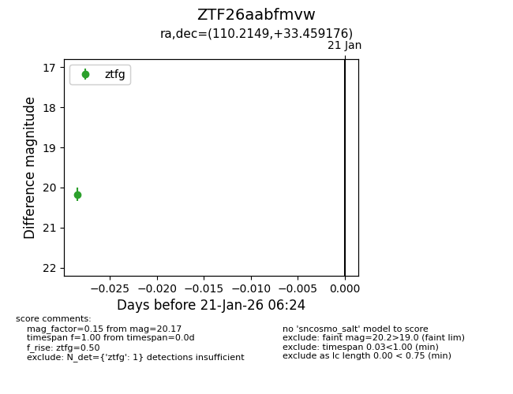
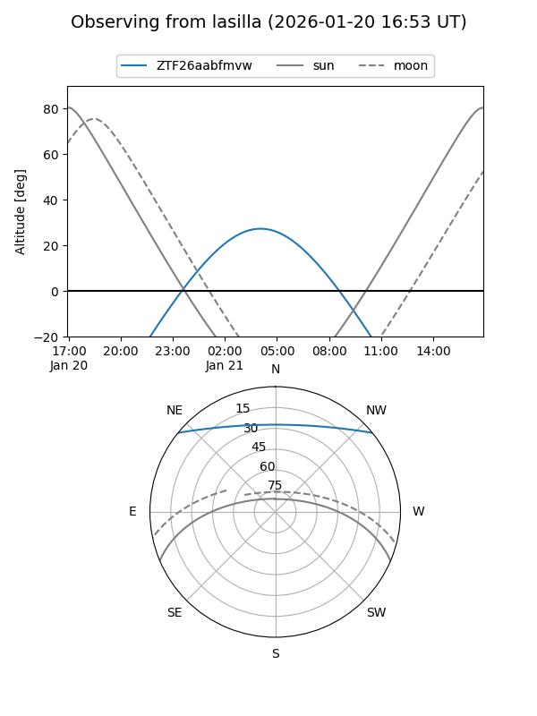
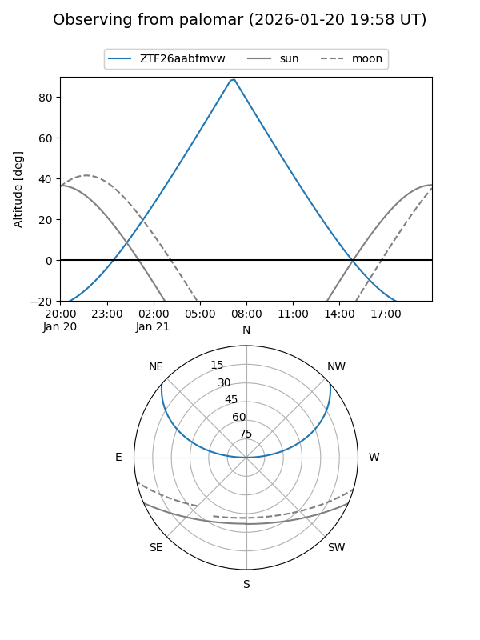

ZTF26aabfmvw
Target ZTF26aabfmvw at 2026-01-21 06:26
Aliases and brokers:
FINK: link
Lasair: link
ALeRCE: link
alt names
ZTF26aabfmvw (ztf,fink_ztf)
Coordinates:
equatorial (ra, dec) = 110.2149,+33.45918
equatorial (HMS+DMS) = 07:20:51.58,+33:27:33.03
galactic (l, b) = (184.8218,+20.27102)
Flags:
Photometry:
last ztfg=20.17
1 ztfg detections
Lightcurve

Visibility


Additional plots